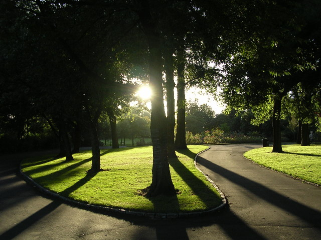
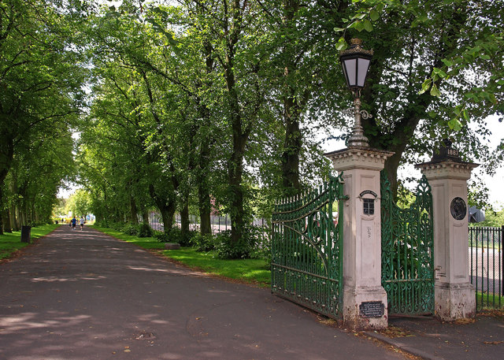
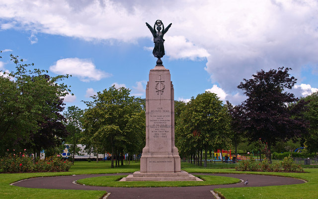
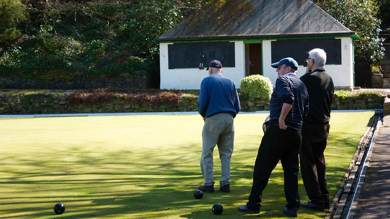

Victoria Park






Victoria Park is 50 acres of formal floral displays in the west of Glasgow. It is dedicated to Queen Victoria I and was created to celebrate her golden jubilee in 1887 and is considered Glasgow’s prettiest park.
Not only great for lovers of horticulture, Victoria Park has several facilities to excite people of all ages and interests. Whether enjoying a game of tennis in one of the courts, sailing in the boating pond and taking the kids to one of the play areas, you’ll never be bored at Victoria Park.
Victoria Park is super easy to visit with Lime Street and Victoria Park corner bus stops dropping you just outside. Partick train station is only a 25 minute walk away!
Although certain facilities may not always be available, the park is open to the public year-round and is a popular spot for wedding photoshoots.
Victoria Park was named in honor of Queen Victoria I's jubilee in 1887. The park was built by a workforce made up of unemployed men in need of an occupation to see them through a difficult period.
The gates were paid for by local women who subscribed a penny each, said to be partly in gratitude for providing work for their men and partly for keeping them sober.